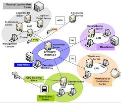
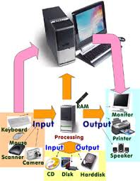

ความหมายและความเป็นมาของระบบคอมพิวเตอร์
เครือข่ายคอมพิวเตอร์ (Computer Network) คือ กลุ่มของคอมพิวเตอร์และอุปกรณ์คอมพิวเตอร์ที่ถูกนำมาเชื่อมต่อกันผ่านอุปกรณ์ด้านการสื่อสารหรือสื่ออื่นใด ทำให้ผู้ใช้ในระบบเครือข่ายสามารถติดต่อสื่อสารแลกเปลี่ยนและใช้
อุปกรณ์ต่าง ๆ ของเครือข่ายร่วมกันได้

การที่เครือข่ายคอมพิวเตอร์มีบทบาท และความสำคัญเพิ่มขึ้นเพราะไมโครคอมพิวเตอร์ได้รับการใช้งานอย่างแพร่หลาย จึงเกิดความต้องการที่จะเชื่อมต่อคอมพิวเตอร์เหล่านั้นเข้าด้วยกัน เพื่อเพิ่มขีดความสามารถของระบบให้สูงขึ้นเพิ่มการใช้งานด้านต่าง ๆ และลดต้นทุนระบบโดยรวมลง เครือข่ายมีตั้งแต่ขนาดเล็กที่เชื่อมต่อกันด้วยคอมพิวเตอร์เพียงสองสามเครื่องเพื่อใช้งานในบ้าน หรือในบริษัทเล็กๆ ไปจนถึงเครือข่ายระดับโลกที่ครอบคลุมไปเกือบทุกประเทศเครือข่ายสามารถเชื่อมต่อคอมพิวเตอร์เป็นจำนวนมากทั่วโลกเข้าด้วยกัน เราเรียกว่า เครือข่ายอินเทอร์เน็ตระบบเครือข่ายคอมพิวเตอร์ มาจากลักษณะการทำงานของเครื่องคอมพิวเตอร์ขนาดใหญ่ที่เรียกว่า Mainframe (เมนเฟรม) ที่ทำงานแบบรวมศูนย์กลาง ซึ่งค่าใช้จ่ายสูงมาก ประกอบกับมีปริมาณการใช้ระบบเพิ่มมากขึ้น ทำให้ระบบแบบรวมศูนย์กลางไม่สามารถตอบสนองความต้องการได้อย่างมีประสิทธิภาพ จึงเกิดแนวคิดในการพัฒนาให้มีการประมวลผลแบบกระจายขึ้นมาแทนระบบแบบรวมศูนย์กลาง จึงเป็นระบบเครือข่ายคอมพิวเตอร์ ขึ้น
องค์ประกอบของระบบเครือข่ายคอมพิวเตอร์
1. คอมพิวเตอร์ เครื่องคอมพิวเตอร์ทั่วไป
2. สื่อสัญญาณ เช่น สายเคเบิล คลื่นวิทยุ
3. สวิตซ์ อุปกรณ์สวิตซ์
4. โปรโตคอล ตัวกำหนดว่าคอมพิวเตอร์จะสื่อสารกันด้วยวิธีใด
5. ผู้ใช้คอมพิวเตอร์ เป็นผู้ใช้งานคอมพิวเตอร์ทั่วไป

โครงสร้างระบบคอมพิวเตอร์
องค์ประกอบของคอมพิวเตอร์
วงจรการทำงานของคอมพิวเตอร์
ความหมายและความเป็นมา
คอมพิวเตอร์
สรุป โครงสร้างระบบคอมพิวเตอร์
ภาษาคอมพิวเตอร์
ข้อมูล ผู้จัดทำ